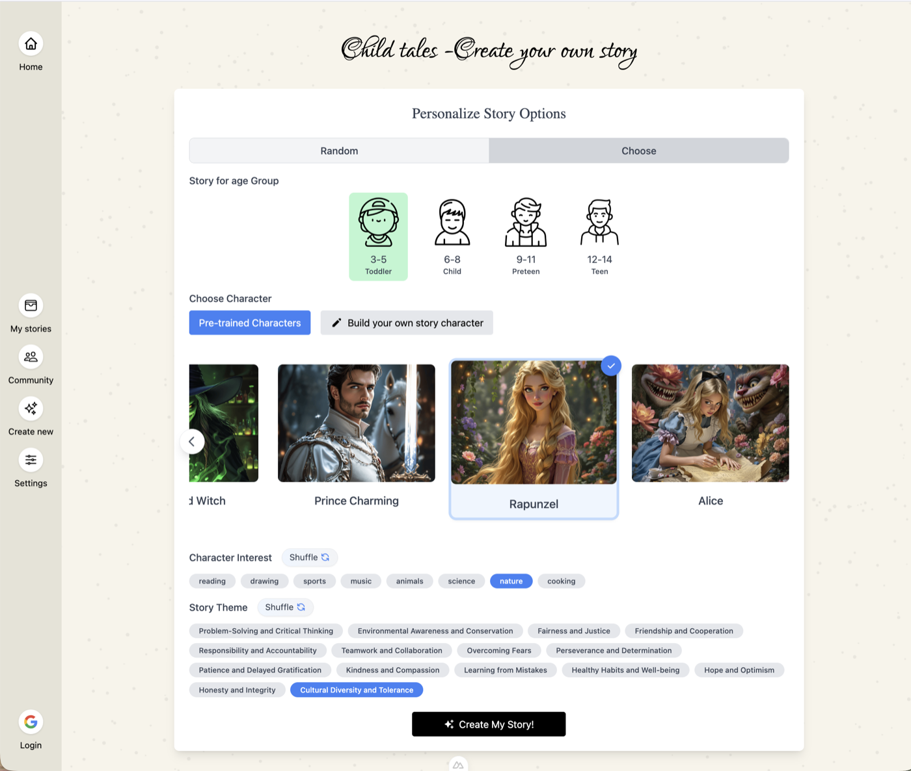
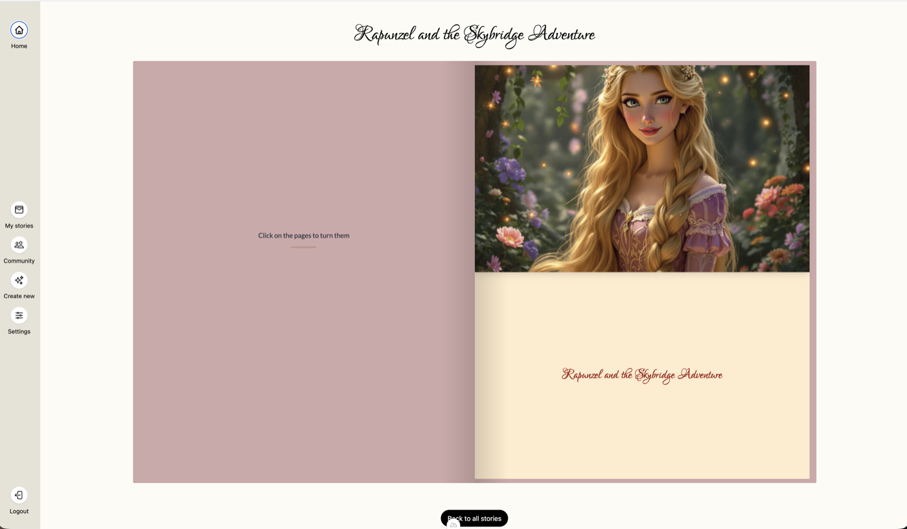

Selected projects
Sajan Sainju · Full-stack developer
github.com/sainjusajan
Overview
Four projects, different scales.
| Project | What it is | Stack |
|---|---|---|
| VisualVocab | iOS app — point your camera at an object, learn its name in 11 languages | React Native, TypeScript, Swift, Supabase, Nuxt |
| ChildTales | Web app that generates illustrated children's stories, starring a character you train on your own photos | Nuxt 3, NestJS, PostgreSQL, Redis, OpenAI, Replicate, Docker |
| ourcli | CLI for AWS, GitHub and deploys | Go, AWS SDK, GoReleaser |
| Deployment tracker | Board showing who holds each shared frontend environment | GitHub API, GitHub Pages, OAuth |
VisualVocab
iOS language-learning app. Point, tap, and learn.
- Camera detects objects in real time and labels them in your target language
- Tap or draw a box on anything for a precise AI identification
- Every word found is saved to a personal vocabulary list
- 11 languages, light and dark themes, guest mode
- In-app purchases for cloud identification credits


VisualVocab — how it works
Three ways to identify an object, each a different trade-off.
VisualVocab — shipping it
Everything from the model to the App Store listing.
What I built
- The app: 60 TypeScript files, ~7.9k lines
- Backend: Postgres schema, 3 edge functions, auth, payments
- Native: Swift bridge for Apple Intelligence
- Design system: palette, type scale, 8 components
- Landing site in Nuxt 4 on Cloudflare Pages
- Privacy policy, terms and support pages
- CI with GitHub Actions and EAS Build
Business model
- Guest mode works with no account at all
- 10 free credits on signup
- Credit packs at $0.99 / $3.99 / $9.99
- Only the cloud path costs anything to serve, so the free modes stay free
ChildTales
Illustrated children's stories, generated around a character the child chooses — or becomes.
- Pick an age group, a character, a set of interests and a theme — get a full illustrated storybook back
- Stories are written for the age band, so a toddler and a preteen get different vocabulary and plot complexity
- 14 teaching themes to choose from: kindness, perseverance, overcoming fears, honesty
- Finished stories read as a page-turning flip book, saved to a library and shareable to a community feed
- Google sign-in; stories are kept per account


ChildTales — how it works
A long-running AI pipeline, and a character that stays the same across every page.
ourcli
Internal Go CLI that puts everyday infrastructure work behind one command.
The problem
- One task meant four tools — the AWS console, the AWS CLI, GitHub and the GitOps repo, each with its own login
- Account IDs, bastion hosts and port conventions lived in wiki pages and people's heads
- Opening a tunnel to a dev database took six manual steps, and usually failed the first time on the wrong account
- Rollbacks — the thing you most need to get right — were done by hand, from memory, under pressure
How it solves it
- One login. The whole SSO flow in a single command, and tunnels come back on the same local ports after a session expires, so saved DB connections keep working
- No bastion trivia.
aws rds connect <db>hides the SSM plumbing; same shape for caches and clusters - The org at a glance. Repos, open PRs and running workflows across a GitHub org in one list
- Deploys you can reason about. Every image tag is resolved back to the pull request and CI run that produced it, so a rollback is a choice between changes, not between hashes
- Guessable. Consistent
area verbgrammar with shell completion over live resources; cross-platform binaries and a one-line install
ourcli — how it works
One binary in front of four systems that used to be visited separately.
ourcli <area> <verb>, with completion over live resources.
One install: cross-platform binaries, no runtime to set up.
ourcli — before and after
Opening a tunnel to a dev database, then rolling back a service.
# which account is dev? ask in chat, or check the wiki $ aws sso login --profile dev-admin # find the bastion instance id — another wiki page $ aws ssm start-session --profile dev-admin \ --region eu-west-1 \ --target i-0a1b2c3d4e5f67890 \ --document-name AWS-StartPortForwarding... \ --parameters host=orders-db.xxxxx.rds.ama...,\ portNumber=5432,localPortNumber=5433 An error occurred (TargetNotConnected) # wrong account. repeat, and remember which local # port you used. lose the tunnel when SSO expires. # to roll back, open the GitOps repo, find the # image tag, work out what was in it, edit YAML
$ ourcli auth ✓ Authentication complete. ✓ Reconnected orders-db on port 5433 $ ourcli aws rds connect orders-db ✓ Tunnel started on port 5433 (same port, always) $ ourcli deploy tags orders-service --env dev TAG PR TITLE CI a3f91c2 #412 Retry failed payouts passed 7b20e4d #409 Bump shared client lib passed 1c8ae30 #401 Add payout webhook failed $ ourcli deploy rollback orders-service --env dev ✓ Rolled back to 7b20e4d (#409)
Deployment tracker
Who is holding each shared frontend environment, right now.
The problem
Four shared environments, several repos, everyone's branch wants one. The question got asked in chat several times a day — and people deployed over each other's work.
The approach
- A repo × environment grid, computed from GitHub labels, deploy runs, PR state and branches — not from what anyone claimed
- Statuses: deployed, deploying, failed, never finished, idle >7 days, free to take
- Merged PR means the slot frees itself automatically
- A
hold:<env>label reserves a slot when someone does know better - Reading needs no sign-in; hosted on GitHub Pages behind GitHub auth
Deployment tracker — how it works
Nothing is typed in. Every cell is derived from what GitHub already knows.
Stack
What I used across these projects.
| Frontend | TypeScript, React 19, React Native, Expo, Vue 3, Nuxt 3 & 4, Tailwind, Zustand, Skia, Reanimated |
| Backend | NestJS, TypeORM, Deno edge functions, Go, REST APIs, Redis + Bull queues |
| Data | PostgreSQL, Supabase, Row Level Security, PL/pgSQL, migrations, S3 |
| Auth & payments | OAuth / PKCE, Google Sign-In, Apple Sign-In, Passport + JWT, StoreKit in-app purchases |
| AI & native | TensorFlow Lite, YOLO, OpenAI, Anthropic Claude, Replicate (Flux LoRA fine-tuning), Swift, Objective-C, Apple Vision, Foundation Models |
| Infra & delivery | Docker Compose, nginx, GitHub Actions, EAS Build, Cloudflare Pages, GitHub Pages, GoReleaser, AWS (SSO, RDS, EKS, SSM) |
Thank you
Happy to go deeper on any of it.
Sajan Sainju · github.com/sainjusajan